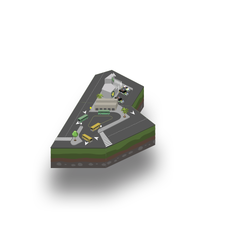

- Videovigilancia IP
- Control de acceso
- Protección de activos móviles
- Software y analíticas
- Centros de control

Con el lanzamiento en el año 2012 de una nueva unidad de negocios, ViKua se introduce en el desarrollo, comercialización e implementación de Sistemas Inteligentes de Seguridad Patrimonial.
A través de alianzas con reconocidas marcas nacionales e internacionales, la empresa busca brindar a sus clientes sistemas que le permitan salvaguardar su patrimonio y presentar un retorno en la inversión realizada al minimizar pérdidas y costos asociados a la prevención y mitigación de riesgos.
¿Cómo lo hacemos?
• Alianzas con importantes fabricantes y desarrolladores a nivel internacional.
• Casos de éxito en la implementación de sistemas de seguridad patrimonial y control de acceso.
• Contrastada capacidad de integración y desarrollo de soluciones "llave en mano", conjugando lo mejor de hardware y software del mercado.
• Orientados a brindar un servicio técnico permanente y ayudar en la generación de resultados con retorno de la inversión realizada por el cliente en el corto plazo.
Videovigilancia IP
La avanzada tecnología IP de nuestros equipos permite visualizar, controlar y administrar fácilmente todas las cámaras de red, usando cualquier navegador estándar o software de administración.
Los equipos utilizados en estas soluciones brindan al cliente la posibilidad de enviar imágenes de alta resolución (entre 1MP y 8MP), así como audio u otros eventos detectados a través del mismo dispositivo.
Trabajamos con cámaras IP, cuya arquitectura les permite ser integradas fácilmente a redes de comunicación, y brindar al cliente una solución modular de sistemas inteligentes de análisis de video para ampliar la gama de herramientas implementadas sobre la misma arquitectura.
La interconexión de las cámaras IP al sistema central puede ser realizada de manera inalámbrica o cableada. De esta manera se facilita la integración y escalabilidad de la solución, contribuyendo a la reducción de costos y al aprovechamiento de infraestructura existente.
Características de nuestros sistemas
Escalabilidad: la expansión de la red de cámaras instaladas puede realizarse tomando en cuenta cada punto adicional de monitoreo, sin incrementar el costo de integración a una red existente o alterar la arquitectura inicialmente diseñada.
Calidad de Imágen: Todos los productos utilizados en esta solución utilizan tecnología Megapixel, razón por la cual el cliente gozará de elevadas resoluciones que pueden ir desde 1280x800 hasta 2560x1920.
Facilidad de Transmisión: Con la finalidad de reducir costos en el transporte de datos, todos nuestros productos tienen la capacidad de trasmitir múltiples streaming de video independientes, activar el flujo de video adaptable de acuerdo a la actividad registrada y enviar imágenes con áreas innecesarias recortadas, utilizando una compresión H.264.
Beneficios
• Monitoreo en tiempo real para salvaguardar la integridad física de los activos, controlar procesos claves de la organización e identificar potenciales riesgos dentro de una política de prevención de riesgos.
• Reducción de costos de implementación, reposición y mantenimiento, así como en uso de personal para resguardo de los activos.
• Capacidad de almacenaje y grabación de los eventos registrados para elaboración de informes, controles posteriores o generación de elementos probatorios de amenazas realizadas contra el patrimonio.
• Fácil integración con nuevas tecnologías de hardware y software que permiten incrementar la inteligencia del sistema (Sistemas de Control de Acceso, Detección de Intrusos, Analíticos de Video, entre otros), apoyando la gestión de riesgos con las nuevas tecnologías de la industria.
Detección de Intrusos
Es ideal para alertar sobre el acceso a zonas restringidas o detectar movimientos en espacios u horas clasificadas como de alto riesgo, la solución incorpora equipos de reconocidas marcas para integrar paneles de control, equipos de detección y medios de conectividad que permitan levantar alarmas en tiempo real.
De la mano de nuestros aliados nacionales e internacionales brindamos la mezcla entre hardware y software que conjuga la mejore relación precio/calidad. Esta solución se caracteriza por su capacidad de integrarse a otros sistemas inteligentes de ViKua, brindando al cliente la posibilidad de escalar sus herramientas de gestión de riesgo y protección patrimonial.
Con este sistema el cliente reducirá costos de personal de vigilancia e incrementará sus tiempos de respuesta ante posibles riesgos. Es un sistema clave para impulsar una política preventiva de gestión de riesgos y garantizar la integridad de los activos de la organización.
El sistema inteligente de control de acceso consiste en la integración de hardware con tecnología biométrica dactilar y tarjetas de proximidad, con software de administración y personalización de cuentas, para otorgar autorizaciones diferenciadas entre usuarios de los activos del cliente.
Al ser tecnología IP, sirve como complemento ideal a los sistemas de inteligentes de video vigilancia y de detección de intrusos. Incluso, desde el punto de vista software, al ser desarrolladores, podemos interconectar los sistemas instalados para permitir su administración centralizada sobre una plataforma similar.
Características de nuestros sistemas
Escalabilidad: la expansión de nuevos puntos de control únicamente llevará costos de instalación, conexión a la red y configuración de la nueva lectora, permitiendo escalar la solución al ritmo deseado por el cliente y con costos individuales por punto.
Facilidad de uso: interfaz gráfica amigable con posibilidad de incluir mapas de ubicación que facilitan la administración de los componentes del sistema.
Adaptabilidad: el sistema puede adecuarse a requerimientos puntuales del cliente, al tratarse de un desarrollo cuyo componente software es manejado por Grupo InTech Solutions y sus aliados.
Polivalencia: los sensores sirven para diversos fines tales como: control de acceso, monitoreo de tiempos de entrada y salida, validación de asistencia y restricción de horas de acceso a activos. Esto permite aprovechar la inversión para controlar una amplia gama de operaciones claves para el negocio.
Beneficios
• Impedimento de acceso a zonas restringidas y de alto riesgo para la organización.
• Registro de eventos asociados a riesgos consumados sobre el patrimonio.
• Monitoreo y estadísticas de tiempos de entrada y salida, así como del movimiento de los recursos humanos.
• Control de acceso a equipos y espacios mediante tecnologías de reconocimiento intransferible e invulnerable.
Gestión de Flota
Es una herramienta para el monitoreo, administración y control de flotas que opera sobre el sistema de posicionamiento global. Permite recopilar información de las coordenadas geográficas, velocidad, latitud, longitud y rumbo. Además se integra a otros sensores conectados al vehículo que otorgan al centro conocimiento sobre el estado del activo.
Características de nuestros sistemas
Versatilidad: A través del dispositivo de GPS usted podrá monitorear y controlar su vehículo, activo móvil e incluso personal, recibiendo información desde cualquier estación de trabajo. Añadir nuevos activos a monitorear no incrementa el costo de la herramienta central de seguimiento.
Tiempo Real: Dispondrá de información oportuna con reportes que pueden ser recibidos a través de correos electrónicos, mensajería de texto o sistema web, permitiendo un análisis preciso para tomar decisiones inmediatas.
Soporte Técnico Continuo: Es un sistema funcional las 24 horas del día y 365 días al año, en el cual encontrará especialistas dispuestos para colaborar con el cliente en salvaguardar la integridad de sus activos.
Comportamiento del activo: Es un sistema que puede complementarse con sensores adicionales para obtener información relevante al comportamiento del activo o quienes lo administran para un determinado fin.
Protección de la Carga
El objetivo es brindar al cliente una herramienta efectiva para hacer seguimiento a la actividad del activo móvil y registrar cualquier eventualidad que ocurra con los valores transportados.
La transmisión de las imágenes es realizada a través de la red de datos de las operadoras móviles.
Esta tecnología identificada por ViKua como "Transporte Ligero de Datos" es única en la industria de la seguridad. Permite reducir los costos de implementación y llevar al cliente una protección continua, de bajo costo, que ayude a prevenir y responder oportunamente a eventos ocurridos.
Características de nuestros sistemas
Escalabilidad: la expansión de la red de activos controlados no revierte una inversión mayor a la requerida por cada elemento sumado a la red.
Flexibilidad: puede integrarse al sistema cualquier tipo de cámara de red (PTZ, estacionaria, ojo de pez) manteniendo sus funcionalidades. Asimismo, puede integrarse a los sensores del Sistema de Gestión de Flota para un mayor control del activo y una mejor respuesta a otros eventos registrados.
Facilidad de uso: la visualización de la red de vigilancia se puede complementar con una interfaz gráfica georeferenciada, lo cual facilita su administración/seguimiento.
Beneficios
• Visualización en tiempo real y de manera remota al activo móvil y a los valores que este transporta.
• Reduce el personal necesario y los costos de hacer seguimiento continuo a grandes flotas de activos móviles.
• Reduce los tiempos de respuesta y brinda información oportuna ante eventualidades registradas
• Puede complementarse con funcionalidades añadidas como reconocimiento facial u otros analíticos de video que ayuden a brindar mayor inteligencia al sistema.
Para la implementación de proyectos exitosos, se requiere optimizar el hardware y la labor de los operadores a través de software y analíticos que permitan generar alertas, comprimir videos con la información más útil, presentar la información en tiempo real e incluso sugerir la toma de decisiones.
Por eso ViKua ha consolidado distintas soluciones que complementan el portafolio, aumentan la capacidad de respuesta y se integran a la infraestructura que el cliente posea.
Consiste en el diseño de una solución hardware/software confortable y moderna para llevar adelante actividades operativas, de seguimiento y control.
Se realiza el equipamiento y la integración de sistemas destinados a brindar herramientas de gestión centralizada efectiva y cuyo objetivo es incrementar la capacidad de acción del personal destinado a seguimiento de las operaciones.
Equipamiento especializado para su uso en condiciones 24/7
Herramientas de Seguridad
• Administración de video
• Analíticos de video
• Eventos y alertas
Herramientas de Administración
• Administración de Control de Acceso
• Administración de flotas
• Generación de reportes y estadísticas
Herramientas de Planificación
• Cálculo de tiempos estimados de viaje
• Simulador de rutas óptimas
Beneficios
• Capacidad elevada de procesamiento de información, con herramientas que reducen la necesidad de personal
• Completamente personalizados a las necesidades del cliente y los servicios que desea incorporar de manera paulatina
• Escalabilidad en la integración de sistemas adicionales
• Reducción de los costos operativos al utilizar herramientas que permiten incrementar la eficiencia del personal asignado